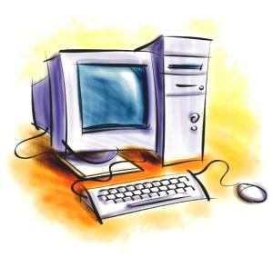
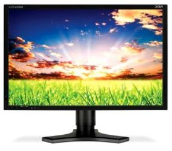
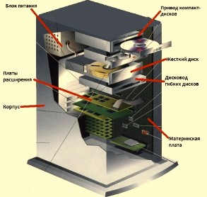

Из чего же состоит наш компьютер?

Что такое компьютер знает почти каждый. Это такая вещица с помощью, которой можно делать уйму полезных вещей. Например,
управлять деньгами в банке, рисовать картинки, создавать мультики, бродить по интернету, общаться со своим друзьями и многое многое другое…
Компьютеры в Минске бывают нескольких видов. Настольные, еще называют их дескопт, и миниатюрные – ноутбук, нетбук. Бывают еще и рабочие станции. Но простые
смертные врятли видели такое чудо техники, и врятли увидят… Итак, рассмотрим само устройство пк. Самая заметная часть компьютера это монитор.
Самые важные комплектующие находятся внутри прямоугольной коробки, которую называют системным блоком.
В нем находятся такие устройства как процессор, видео карта, материнская плата, звуковая карта, жесткий диск, дисковод,
оперативная память. Теперь обо всем подробнее.


Мониторы бывают разные. Особенно хорошо плоские. Так же мониторы различаются по диагонали. Монитор очень важная часть компьютера. К видео карте подключается монитор. Видеокарты тоже различаются по параметрам. На данный момент на рынке огромное множество видеокарт под разные требования
и бюджет. Самая большая плата в компьютере называется материнской. К ней подключаются все остальные устройства.
Процессоры в персональных компьютерах отвечают единому стандарту, который задала фирма Интел. Есть, конечно, у нее и конкуренты в лице фирмы амд. Они впринципе выпускают аналогичные по мощности процессоры. Для жестких дисков очень важный параметр вместимость. Сейчас выпускают диски до нескольких терабайт. Для нужд обычного пользователя этого хватит с лихвой. Так же следует обратить внимание на выбор дисковода. В наше время стали выпускать дисковод для записи блюрей дисков. Правда стоят такие диски, как и дисководы все еще дорого. Но в скором времени на смену обычным сд и двд дискам придут блюрей диски. Чаще на компьютерах звуковая карта встроена. Но если вы профессионально занимаетесь музыкой, то вам не обойтись без хорошей звуковой карты.
Каждая составляющая компьютера очень важна. Надеюсь, вы немного разобрались, из каких частей устроен компьютер. Советую внимательно подходить к выбору и покупке компьютера как за наличный расчет для себя, так и для организации
компьютер по безналичному расчету.
Читайте также:
Состовляющие ПК. Корпус
Новые видеокарты: GeForce GTX 660 и GTX 650
Следующая статья:
Как правильно выбрать материнскую плату.